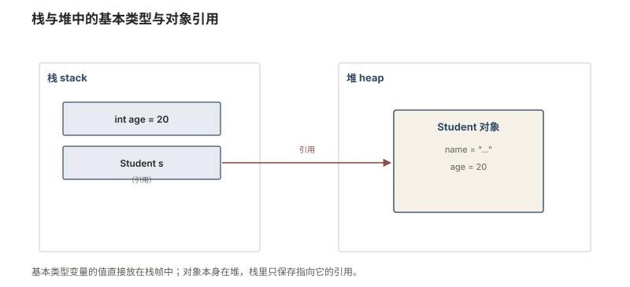

SOE102 · 第 5 章
对象入门
Introduction to Objects
虚线下划线为术语；悬停查看中文、英文与释义，完整词典见“术语”。
本章目录
本章从“世界由对象组成”出发，讲清栈与堆里存的是什么、类与实例的关系、构造方法与 this、private/public 与封装、static 与实例变量的区别，最后用对象数组、toString 与 samePerson 收尾。
本章要点
- 对象把相关的数据（状态，变量）与处理（行为，方法）放在一起。
- 基本类型变量存值在栈上；对象存在堆上，变量里存的是指向它的引用。
- 类是模板，对象是实例；同一个类可以创建多个数据不同的对象。
- 构造方法名与类名相同、没有返回类型，在 new 时运行，用来给实例变量赋初值。
- this.name 指实例变量，name 指参数或局部变量，同名时靠 this 区分。
- 实例变量默认 private，需要对外读取时提供 public getter，这就是封装。
- static 变量全类只有一份，被所有对象共享；实例变量每个对象各一份。
- 对象的 == 比较地址，比较内容要自己写方法；默认 toString 只给出类名与哈希。
5.1 对象：状态与行为
Java 是面向对象的语言，除了基本数据类型，Java 里的一切都是对象；必要时连基本类型也可以被封装进对象。讲义的说法很直白：世界是面向对象的，现实里几乎一切都是对象，而现实对象都有状态与行为。
以游戏角色为例：状态（state）是名字、血量、职业、位置、武器等，在 Java 里用变量表示；行为（behaviour）是行走、战斗等，会改变状态，用方法表示。对象object就是“一组相关的数据与处理”：数据彼此相关，变量表示状态、方法表示行为。讲义把要点压成四句：对象能装下我们需要的所有东西；对象有属性（变量）；对象有方法；任何东西都可以是对象。更好的做法是把相互关联的数据归到一个对象里，而不是散成一堆变量。
其实我们早就在用对象：String 对象保存一段文本并提供处理方法，Scanner 与 Math 也各有数据与方法。区别只在于这些是别人写好的库，而本周开始我们写自己的。
W5 slide 6–20
5.2 栈与堆：基本类型 vs 引用类型
JVM 给不同类型的数据分配不同的内存区域。栈stack存放方法执行的顺序与局部变量，基本类型变量的值就放在栈上；堆heap存放对象，使用动态的内存分配与释放。引用类型变量本身也在栈上，但它存的是指向堆中对象的指针。
这解释了一条关键规则：把一个引用类型变量赋给另一个引用类型变量时，复制的只是指针，两个变量随后指向同一个对象；而基本类型赋值复制的是值，两个变量此后毫无关系。
int myNumber = 7;
int newNumber = myNumber;
myNumber++; // newNumber 仍是 7
Person p1 = new Person("John");
Person p2 = p1; // 只复制地址
p1.setName("James"); // p2 看到的名字也变了基本类型只有 8 种：byte、short、int、long、float、double、boolean、char。除此之外都是引用类型（对象），包括 String、数组与 Math。基本类型存的是真正的值，所以它们没有方法；要处理一个 char，只能借助 Character 包装类的静态方法。对象则既有属性又有方法。


绘图提示词
Clean vector memory diagram split into two vertical panels. Left panel labelled Stack with three boxes: int myNumber holding 7, int newNumber holding 7, and a reference box p1 holding an arrow. Right panel labelled Heap with one rounded object box for Person containing name, gender, city, dateOfBirth, idNumber, and two arrows from p1 and p2 on the stack pointing to the same object. Flat 2D, thin 1.5 px strokes, muted slate blue and warm grey palette, white background, English labels, no cartoon, no gradient, no shadow.
W5 slide 7–11
5.3 类与对象：模板与实例
类class是对象的模板：它定义对象有哪些属性，也描述对象有什么行为。对象object是按这个模板造出来的具体实例。用一个类可以创建任意多个对象，每个对象的数据各不相同。
public class Person {
String name;
String gender;
String city;
String dateOfBirth;
int idNumber;
}这个 Person 类只有五个字段，没有方法、也没有 main 方法。这些变量叫实例变量instance variable：每个 Person 对象各有一套，互不干扰。讲义坦率地指出，此时的 Person 更像一个结构体（struct）——只装数据，还没有行为。
谁来给它赋值？这正是构造方法要解决的问题。另一个关键分工是：Person 类不该有 main，main 放在单独的控制类controller class里。控制类是 static 的，整个应用只有一个 main 类，它没有构造方法；而 Person 类不是 static，它定义数据对象，有构造方法，会存在许多个不同的 Person 对象。
W5 slide 21–29
5.4 构造方法与 this
构造方法constructor是对象被创建（“构造”）时运行的专门方法，用来给实例变量赋值，也可以完成其他初始化任务。它有三个形式特征：名字与类名完全相同；没有返回类型（连 void 都不写）；可以有任意多个参数。一个类可以有多个构造方法，但至少应该有一个；每次 new 都会运行匹配的那个。
public class Person {
String name;
String gender;
String city;
String dateOfBirth;
int idNumber;
public Person(String name, String gender,
String city, String DoB, int id) {
this.name = name;
this.gender = gender;
this.city = city;
this.dateOfBirth = DoB;
this.idNumber = id;
}
}这里出现了两个同名变量：name 是实例变量，在整个类里可见；构造方法的参数 name 是局部变量，只在构造方法内存在。直接写 name = name 只会把参数赋给自己。两种解法：改参数名（public Person(String inputName) { name = inputName; }），或用 this. 明确指向实例变量——this.name = name; 左边是类变量、右边是局部变量。
this 指“当前这个对象”，可以访问它自己的变量与方法，例如 this.getName()；在构造方法里尤其有用。创建对象时参数要与构造方法匹配：
Person p1 = new Person("James Bond", "M", "London", "1921-11-11", 007);
Person p2 = new Person("Jackie Chan", "M", "Hong Kong", "1954-4-7", 1);
System.out.println(p1.name);
System.out.println(p2.name);同一个类造出两个数据完全不同的人，Person 的代码一行没改——这就是把数据封装成对象的价值：比一堆散变量甚至数组更清楚。
W5 slide 30–46
5.5 public、private 与封装
只有一个类时，public 与 private 用起来没差别；一旦有多个类，差别就出现了。private 的成员只能被声明它的那个类访问，适合内部使用的方法；public 的成员可以被其他类访问，适合需要对外提供的功能。默认（不写修饰符）时，成员对本类以及同包的其他类可见。
讲义给出的习惯是：数据要安全，变量与方法默认都设为 private，除非确实需要从别的类访问；构造方法与需要对外的方法则应当是 public。问题随之而来——字段全 private 之后，别的类连读都读不到。
解法是封装encapsulation：把数据与内部实现藏起来，只通过 public 方法访问。具体做法是给每个需要读取的字段配一个 getter：
private String name;
public String getName() {
return name;
}这样主类能用 p1.getName() 读到名字，却不能写 p1.name = "..." 随意篡改。讲义把封装列为 OOP 与 Java 的核心原则之一：对象只分享它必须分享的东西。
W5 slide 47–53
5.6 static 与实例变量
static 的含义是“整个类只有一份”。即使创建 100 个对象，static 变量也只有一份，被所有对象共享；普通实例变量则是每个对象一份。
public class Person {
private static String name; // 全类共享
private String gender; // 每个对象一份
// ...
}
// p1 与 p2 先后创建，name 被后一次赋值覆盖
// 结果 p1.getName() 与 p2.getName() 都返回 Jackie Chan讲义用这个反例说明：把 name 写成 static，第二个对象的构造会把第一个的值覆盖掉，两个人变成同名。改成非 static 后，两个名字各存一份，才对得上。
那 static 什么时候该用？讲义给了两个正当场景：统计一共创建了多少个对象；定义常量。变量声明为 static 后，只有一份副本，在类级别被所有对象共享。反过来，每个 Person 的姓名、性别、城市显然应该各自一份。
W5 slide 54–58
5.7 比较对象与 toString
对象变量存的是地址，所以 == 比较的是地址：p2 = p1 时两者地址相同，p1 == p2 为 true；用同样参数 new 两个对象，地址不同，p1 == p2 为 false，哪怕每个字段都一模一样。基本类型则不同，== 比较的是值本身。
要按内容判断“是不是同一个人”，得自己写方法。讲义的做法是定义一个返回 boolean 的实例方法，把“当前对象 this”与“传进来的那个对象 that”逐字段比较，借助 getter 读取：
public boolean samePerson(Person that) {
if (!this.name.equals(that.getName())) {
return false;
}
if (!this.gender.equals(that.getGender())) {
return false;
}
if (this.idNumber != that.getIdNumber()) {
return false;
}
return true;
}任何一项不匹配就立刻返回 false，全部匹配才返回 true。讲义顺带提到 Java 对象本来有 equals() 方法，也可以通过继承来覆写它，但 equals() 属于更进阶的内容，本模块不展开。
另一个所有对象都有的方法是 toString。默认版本没什么用：System.out.println("Person 1 " + p1) 打印出 Person 1 lecture5.Person@15db9742——类名加一串哈希。要打印有意义的内容，就在数据类里自己定义 toString，把各个实例变量的值拼成一段文本返回。
W5 slide 59–73
5.8 对象数组与 for 循环
既然可以声明 int[]，也就可以声明 Person[]。对象数组同样先创建数组、再往每个槽位放对象；槽位里放的是引用，可以复用已有对象，也可以当场 new 一个。
Person[] people = new Person[3];
people[0] = p1;
people[1] = p2;
people[2] = new Person("Diana Rigg", "F", "London", "1943-8-21", 2);
for (int i = 0; i < people.length; i++) {
System.out.println("Name is " + people[i].getName());
}遍历时用 people.length 作边界，通过 people[i] 拿到对象，再调用它的方法。若把整个数组直接打印，得到的是引用而不是内容——System.out.println("Array is " + people) 会输出类似 [LLecture5.Person;@15db9742 的东西。想看到每个人的信息，要么逐个调用 getter，要么在循环里调用 people[i].toString()。
讲义的收尾判断是：数据类现在有了 private 字段、public getter、构造方法，能把一个人的全部信息归在一起，比一堆变量甚至数组都更好用；后续还会继续加功能。
W5 slide 63、74–77